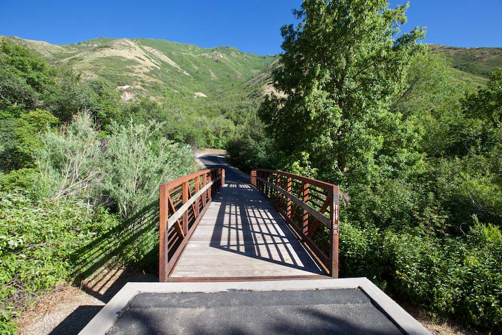
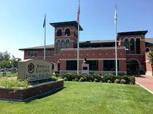
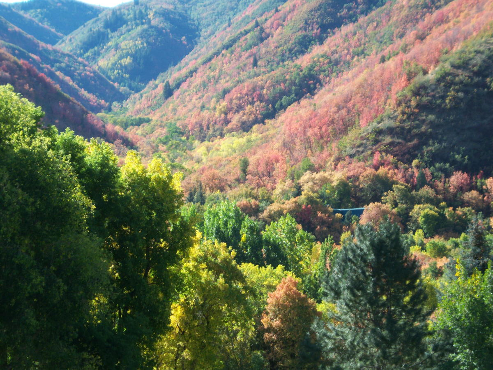
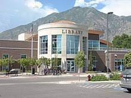
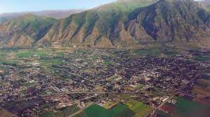
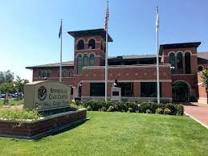
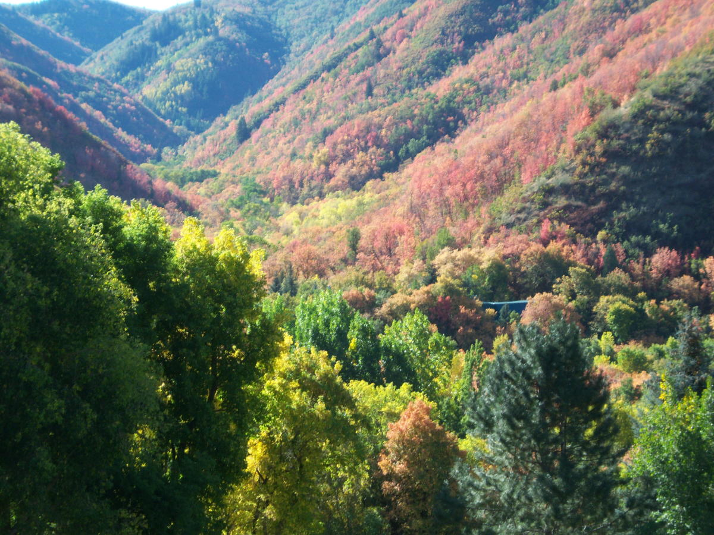
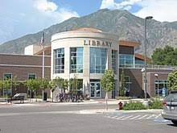
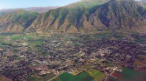

Town Information
Population: 32,319
Elevation: 4577 ft.
City Size: 14.4 sq. mi
The Story of Springville, Utah
Springville is nestled in the foothills of the Wasatch Mountains, two miles east of Utah Lake and just five miles south of Provo. The city is ideally positioned with easy access to both Interstate 15 and Interstate 80. The city was First explored in 1776 by Father Escalante, a Jesuit Priest. Springville was originally settled by eight pioneer families in 1850. Incorporated in February 1853, the city was first called Hobble Creek by the early pioneers because their horses were often hobbled (by loosely tying their front feet together) and left along the stream to graze. If the horses wandered into the creek, the hobbles came off in the water. Thus, the settlement earned its original name. Later, as the town grew, the name was changed to Springville because of the many freshwater springs in the area. The original name is no longer in use, however; the canyon stream and golf course are still called "Hobble Creek".
For more information regarding Sprinville's founding, please visit Utahvalley.com/listing/springville-city/652/








